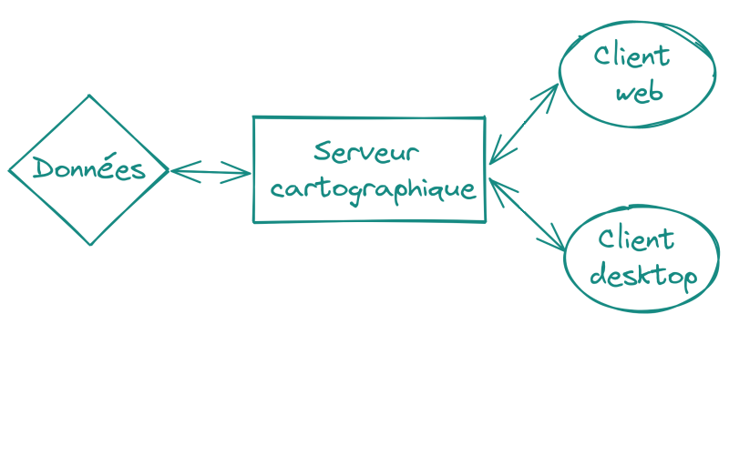
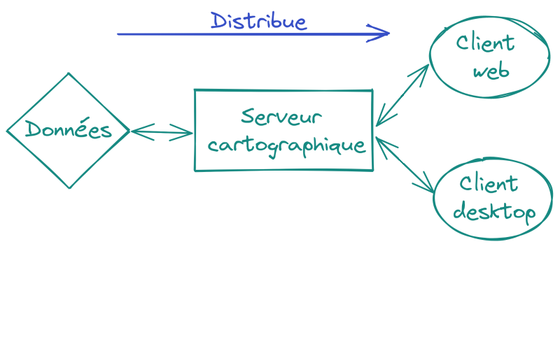
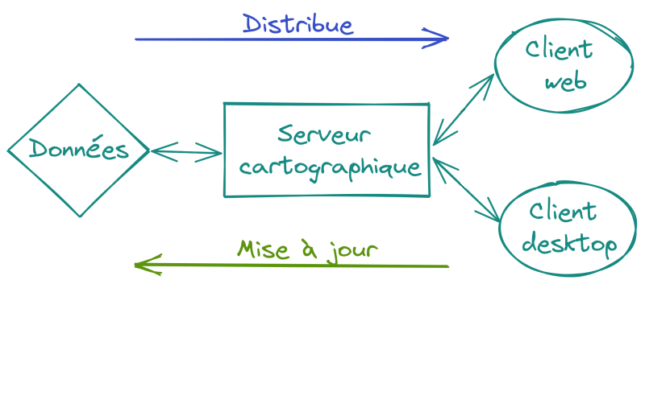
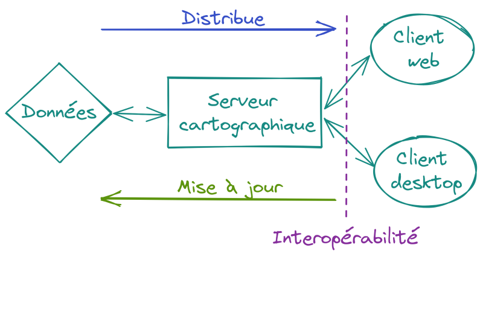
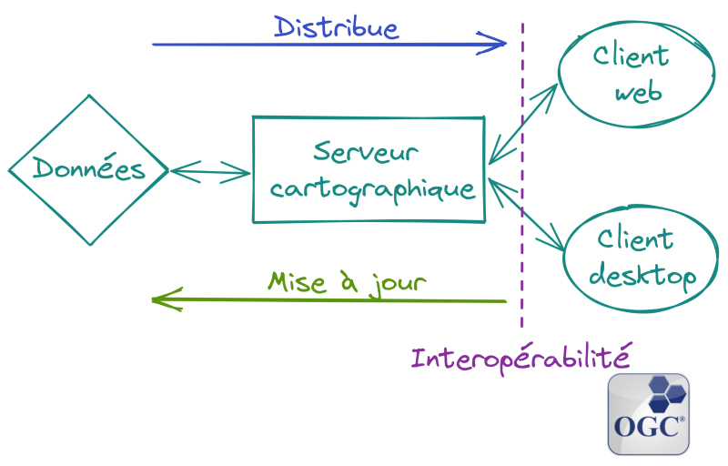

QGIS Server, le choix de la simplicité(?)
Paul Blottiere
Hytech-Imaging / QCooperative
18-01-2022

Quoi?
- Serveur de cartographie: concepts simplifiés
- QGIS Server: ses atouts sur la simplicité de configuration
- Déploiement: terminologie et exemple "simple" d'une stack complète

Qui?
- Paul Blottiere
- Lead Dev à Hytech Imaging
- Développeur QGIS core et server
- Membre de la QCooperative

QCooperative
- Large panel de services SIG
- Éthique de l'Open Source
- Groupe International
- Membres actifs de la communauté QGIS
Hytech-Imaging
- Objectif: développer les usages de l'imagerie spectrale
- Services d'acquisition (aéroportés, drones, ...)
- Extraction d'informations
- Infra de traitements
Serveur de cartographie: 101
Serveur de cartographie: 101
Serveur de cartographie: 101
Serveur de cartographie: 101
Serveur de cartographie: 101
Serveur de cartographie: standards OGC
- Standards OGC (Open Geospatial Consortium)
- WMS / WMTS: retourne une image (PNG, JPG, ...)
- WFS / OGC API Features: retourne du texte (GeoJSON, GML, ...)
QGIS Server
- Un serveur de cartographie
- qui respecte les standards OGC (certifié WMS)
- basé sur le moteur de rendu de QGIS Desktop
QGIS Server: écosystème
- Ses camarades open-source
- QGIS Server est-il "mieux"?
- Non!
- QGIS Server est-il "plus simple"?
- Oui sur certains aspects
QGIS Server: WYSIWYG
- Simplicité de configuration
- WYSIWYG (What You See Is What You Get)
- Le projet .qgs/.qgz est LE fichier de configuration
QGIS Server: Plugins
- Simplicité de personalisation
- Plugins Python (PyQGIS)
- https://plugins.qgis.org/plugins/server/
https://docs.qgis.org/3.16/fr/docs/pyqgis_developer_cookbook/server.html
QGIS Server: Extensions
- De nombreuses extensions aux services et paramètres standards OGC
- Exemple: GetPrint
- Génération de rapport (PDF, JPG, ...)
- Basé sur le layout manager de QGIS Desktop (encore du WYSIWYG)
-> pas besoin de composants supplémentaires
QGIS Server: clients
- De nombreuses solutions clientes sur étagère
- Lizmap
- QWC2
- G3W-Suite
Déploiement
- Conteneurisation
- Solution simple de déploiement
- De nombreuses images Docker disponibles pour QGIS Server
docker run -p 8010:80 openquake/qgis-server:ltr
Déploiement
- Orchestration
- Applications multi-conteneurs / multi-hôtes (cluster)
- Maintenance, passage à l'échelle (scaling), ...
- Swarm, Kubernetes, ...
- Pour des besoins simples: docker-compose
Déploiement
- Équilibrage de charge
- Beaucoup de clients -> plusieurs serveurs (scaling)
- Comment distribuer les requêtes aux serveurs innocupés? -> Load-Balancer
- NGINX (Docker image)
Déploiement
- Cache?
- Ne pas activer le moteur de rendu plusieurs fois pour la même chose
- WMS: retourne une image sauvée sur le disque
- Map-Proxy (Docker image)
Déploiement
- Pour résumer
- Composition de conteneurs Dockers avec docker-compose
- Client -> MapProxy (cache) -> NGINX (load-balancer) -> N QGIS Server (scaling)
- Bac à sable de test avec mviewer en client web:
Déploiement
- Configuration insurmontable?
- docker-compose.yml: 30 lignes
- mapproxy/mapproxy.yml: 30 lignes
- nginx-load-balancer.conf: 15 lignes
- mviewer/default.xml: 20 lignes
$ docker-compose up --scale qgisserver=2 -d
Déploiement
- Scaling: qgis-server-stack-qgisserver-1 et qgis-server-stack-qgisserver-2
- Cache: mapproxy/cache_data/countries_cache_EPSG3857
Conclusions
- Concepts assez palpables
- QGIS Server: ses atouts pour la simplicité de configuration
- Déploiement de QGIS Server: exemple "simple" d'une stack complète
- Mais pas si simple en production...
- Si projet complexe (performance en cas de nombreuses couches, ...)
- Si déploiement/maintenance sur clusters
Merci